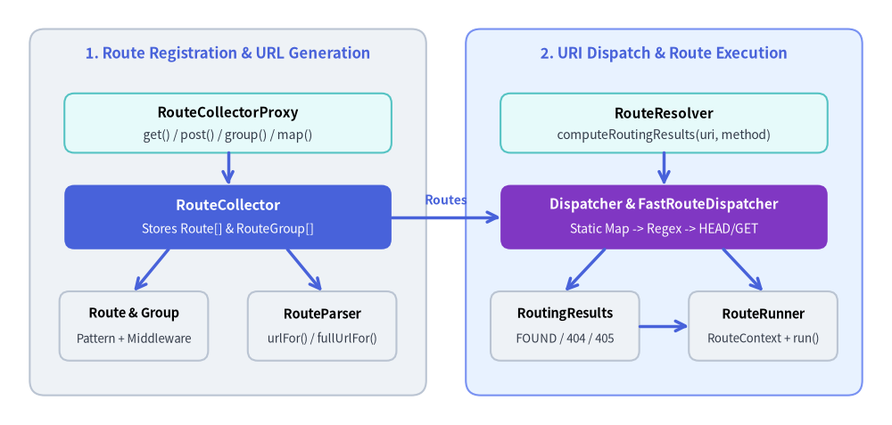
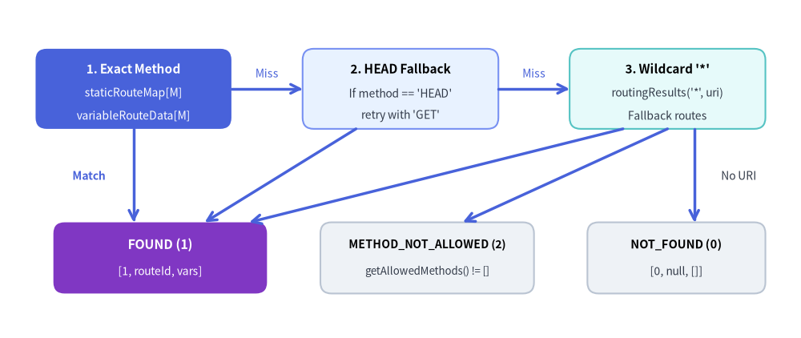

Routing (Slim\Routing)
The Slim\Routing namespace implements Slim 4's FastRoute-backed routing subsystem, covering route registration (RouteCollectorProxy, RouteCollector, Route, RouteGroup), URL generation (RouteParser), request-scoped routing state (RouteContext), and URI dispatching (RouteResolver, Dispatcher, FastRouteDispatcher, RoutingResults, RouteRunner).

Slim 4 Routing Subsystem — Registration, Resolution, and Dispatch Architecture
Source Code
from drawlib.canvas import save , setup
from drawlib.lines import line
from drawlib.shapes import rectangle
from drawlib.styles import Styles
from drawlib.text import text
setup ( width = 180 , height = 86 )
# Outer phase containers
rectangle (
( 46 , 43 ),
width = 80 ,
height = 74 ,
style = Styles . Neutral . patch ( shape_r = 3.0 ),
)
text (( 46 , 75 ), "1. Route Registration & URL Generation" , style = Styles . PrimaryBold . patch ( text_size = 12.0 ))
rectangle (
( 134 , 43 ),
width = 80 ,
height = 74 ,
style = Styles . PrimaryNeutral . patch ( shape_r = 3.0 ),
)
text (( 134 , 75 ), "2. URI Dispatch & Route Execution" , style = Styles . PrimaryBold . patch ( text_size = 12.0 ))
# Left phase nodes
rectangle (
( 46 , 61 ),
width = 66 ,
height = 12 ,
style = Styles . SecondaryNeutral . patch ( shape_r = 2.0 ),
)
text (( 46 , 63 ), "RouteCollectorProxy" , style = Styles . BlackBold . patch ( text_size = 11.0 ))
text (( 46 , 58.5 ), "get() / post() / group() / map()" , style = Styles . Dark . patch ( text_size = 10.0 ))
rectangle (
( 46 , 42 ),
width = 66 ,
height = 13 ,
style = Styles . PrimaryFlat . patch ( shape_r = 2.0 ),
)
text (( 46 , 44.5 ), "RouteCollector" , style = Styles . WhiteBold . patch ( text_size = 11.5 ))
text (( 46 , 39.5 ), "Stores Route[] & RouteGroup[]" , style = Styles . White . patch ( text_size = 10.0 ))
rectangle (
( 27 , 20 ),
width = 30 ,
height = 14 ,
style = Styles . Neutral . patch ( shape_r = 2.0 ),
)
text (( 27 , 22.5 ), "Route & Group" , style = Styles . BlackBold . patch ( text_size = 10.5 ))
text (( 27 , 17.5 ), "Pattern + Middleware" , style = Styles . Dark . patch ( text_size = 9.5 ))
rectangle (
( 65 , 20 ),
width = 30 ,
height = 14 ,
style = Styles . Neutral . patch ( shape_r = 2.0 ),
)
text (( 65 , 22.5 ), "RouteParser" , style = Styles . BlackBold . patch ( text_size = 10.5 ))
text (( 65 , 17.5 ), "urlFor() / fullUrlFor()" , style = Styles . Dark . patch ( text_size = 9.5 ))
# Right phase nodes
rectangle (
( 134 , 61 ),
width = 66 ,
height = 12 ,
style = Styles . SecondaryNeutral . patch ( shape_r = 2.0 ),
)
text (( 134 , 63 ), "RouteResolver" , style = Styles . BlackBold . patch ( text_size = 11.0 ))
text (( 134 , 58.5 ), "computeRoutingResults(uri, method)" , style = Styles . Dark . patch ( text_size = 10.0 ))
rectangle (
( 134 , 42 ),
width = 66 ,
height = 13 ,
style = Styles . AccentFlat . patch ( shape_r = 2.0 ),
)
text (( 134 , 44.5 ), "Dispatcher & FastRouteDispatcher" , style = Styles . WhiteBold . patch ( text_size = 11.0 ))
text (( 134 , 39.5 ), "Static Map -> Regex -> HEAD/GET" , style = Styles . White . patch ( text_size = 10.0 ))
rectangle (
( 114 , 20 ),
width = 30 ,
height = 14 ,
style = Styles . Neutral . patch ( shape_r = 2.0 ),
)
text (( 114 , 22.5 ), "RoutingResults" , style = Styles . BlackBold . patch ( text_size = 10.5 ))
text (( 114 , 17.5 ), "FOUND / 404 / 405" , style = Styles . Dark . patch ( text_size = 9.5 ))
rectangle (
( 154 , 20 ),
width = 30 ,
height = 14 ,
style = Styles . Neutral . patch ( shape_r = 2.0 ),
)
text (( 154 , 22.5 ), "RouteRunner" , style = Styles . BlackBold . patch ( text_size = 10.5 ))
text (( 154 , 17.5 ), "RouteContext + run()" , style = Styles . Dark . patch ( text_size = 9.5 ))
# Internal vertical arrows (Left)
line (( 46 , 55 ), ( 46 , 48.5 ), arrow_head = "->" , style = Styles . PrimaryBold )
line (( 34 , 35.5 ), ( 27 , 27 ), arrow_head = "->" , style = Styles . PrimaryBold )
line (( 58 , 35.5 ), ( 65 , 27 ), arrow_head = "->" , style = Styles . PrimaryBold )
# Internal vertical arrows (Right)
line (( 134 , 55 ), ( 134 , 48.5 ), arrow_head = "->" , style = Styles . PrimaryBold )
line (( 122 , 35.5 ), ( 114 , 27 ), arrow_head = "->" , style = Styles . PrimaryBold )
line (( 146 , 35.5 ), ( 154 , 27 ), arrow_head = "->" , style = Styles . PrimaryBold )
line (( 129 , 20 ), ( 139 , 20 ), arrow_head = "->" , style = Styles . PrimaryBold )
# Cross-phase bridge
line (( 79 , 42 ), ( 101 , 42 ), arrow_head = "->" , style = Styles . PrimaryBold )
text (( 90 , 45.5 ), "Routes" , style = Styles . PrimaryBold . patch ( text_size = 10.0 ))
save ()
class Slim\Routing\RouteCollectorProxy RouteCollectorProxy provides the fluent HTTP verb routing API (get(), post(), put(), patch(), delete(), options(), any(), map(), group(), redirect()) shared by Slim\App$groupPattern before delegating registration to the underlying RouteCollector
Class Signature
<?php
declare ( strict_types = 1 );
namespace Slim\Routing ;
use Psr\Container\ContainerInterface ;
use Psr\Http\Message\ResponseFactoryInterface ;
use Slim\Interfaces\CallableResolverInterface ;
use Slim\Interfaces\RouteCollectorInterface ;
use Slim\Interfaces\RouteCollectorProxyInterface ;
use Slim\Interfaces\RouteGroupInterface ;
use Slim\Interfaces\RouteInterface ;
/**
* @template TContainerInterface of (ContainerInterface|null)
* @template-implements RouteCollectorProxyInterface<TContainerInterface>
*/
class RouteCollectorProxy implements RouteCollectorProxyInterface
{
protected ResponseFactoryInterface $responseFactory ;
protected CallableResolverInterface $callableResolver ;
protected ? ContainerInterface $container = null ;
protected RouteCollectorInterface $routeCollector ;
protected string $groupPattern ;
public function __construct (
ResponseFactoryInterface $responseFactory ,
CallableResolverInterface $callableResolver ,
? ContainerInterface $container = null ,
? RouteCollectorInterface $routeCollector = null ,
string $groupPattern = ''
);
public function getResponseFactory () : ResponseFactoryInterface ;
public function getCallableResolver () : CallableResolverInterface ;
public function getContainer () : ? ContainerInterface ;
public function getRouteCollector () : RouteCollectorInterface ;
public function getBasePath () : string ;
public function setBasePath ( string $basePath ) : RouteCollectorProxyInterface ;
public function get ( string $pattern , $callable ) : RouteInterface ;
public function post ( string $pattern , $callable ) : RouteInterface ;
public function put ( string $pattern , $callable ) : RouteInterface ;
public function patch ( string $pattern , $callable ) : RouteInterface ;
public function delete ( string $pattern , $callable ) : RouteInterface ;
public function options ( string $pattern , $callable ) : RouteInterface ;
public function any ( string $pattern , $callable ) : RouteInterface ;
public function map ( array $methods , string $pattern , $callable ) : RouteInterface ;
public function group ( string $pattern , $callable ) : RouteGroupInterface ;
public function redirect ( string $from , $to , int $status = 302 ) : RouteInterface ;
}
Properties
Property
Type
Default
Description
$responseFactoryResponseFactoryInterface—
PSR-17 response factory used to instantiate responses in routes and redirects.
$callableResolverCallableResolverInterface—
Resolves string, array, or closure route and group handlers.
$container?ContainerInterfacenullOptional PSR-11 dependency injection container.
$routeCollectorRouteCollectorInterfacenew RouteCollector(...)Underlying route collector storing registered routes and groups.
$groupPatternstring''Prefix pattern prepended to all routes and groups registered through this proxy.
Methods & Parameters
Method
Parameters & Types
Return Type
Description
__constructResponseFactoryInterface $responseFactory, CallableResolverInterface $callableResolver, ?ContainerInterface $container = null, ?RouteCollectorInterface $routeCollector = null, string $groupPattern = ''voidInitializes the proxy and creates a default RouteCollector
getResponseFactory(none) ResponseFactoryInterfaceReturns the configured PSR-17 response factory.
getCallableResolver(none) CallableResolverInterfaceReturns the configured callable resolver.
getContainer(none) ?ContainerInterfaceReturns the PSR-11 container instance, or null if none was configured.
getRouteCollector(none) RouteCollectorInterfaceReturns the underlying RouteCollector
getBasePath(none) stringReturns the application base path from the underlying route collector.
setBasePathstring $basePathRouteCollectorProxyInterfaceSets the application base path on the underlying route collector and returns $this.
getstring $pattern, callable|array|string $callableRouteInterfaceRegisters a GET route prefixed with $this->groupPattern.
poststring $pattern, callable|array|string $callableRouteInterfaceRegisters a POST route prefixed with $this->groupPattern.
putstring $pattern, callable|array|string $callableRouteInterfaceRegisters a PUT route prefixed with $this->groupPattern.
patchstring $pattern, callable|array|string $callableRouteInterfaceRegisters a PATCH route prefixed with $this->groupPattern.
deletestring $pattern, callable|array|string $callableRouteInterfaceRegisters a DELETE route prefixed with $this->groupPattern.
optionsstring $pattern, callable|array|string $callableRouteInterfaceRegisters an OPTIONS route prefixed with $this->groupPattern.
anystring $pattern, callable|array|string $callableRouteInterfaceRegisters a route matching GET, POST, PUT, PATCH, DELETE, and OPTIONS.
mapstring[] $methods, string $pattern, callable|array|string $callableRouteInterfacePrepends $this->groupPattern to $pattern and delegates route creation to RouteCollector::map().
groupstring $pattern, callable|string $callableRouteGroupInterfacePrepends $this->groupPattern to $pattern and delegates group creation to RouteCollector::group().
redirectstring $from, string|UriInterface $to, int $status = 302RouteInterfaceRegisters a GET route on $from that returns a response with a Location header pointing to $to.
Usage Example
use Slim\Factory\AppFactory;
use Slim\Routing\RouteCollectorProxy;
$app = AppFactory::create();
$app->setBasePath('/v1');
$app->group('/users', function (RouteCollectorProxy $group) {
$group->get('', [UserController::class, 'index'])->setName('users.index');
$group->post('', [UserController::class, 'store'])->setName('users.store');
$group->redirect('/legacy', '/v1/users', 301);
});
class Slim\Routing\RouteCollector RouteCollector is the central registry that creates and stores RouteRouteGroupInvocationStrategyInterfaceRequestResponse
Class Signature
<?php
declare ( strict_types = 1 );
namespace Slim\Routing ;
use Psr\Container\ContainerInterface ;
use Psr\Http\Message\ResponseFactoryInterface ;
use RuntimeException ;
use Slim\Handlers\Strategies\RequestResponse ;
use Slim\Interfaces\CallableResolverInterface ;
use Slim\Interfaces\InvocationStrategyInterface ;
use Slim\Interfaces\RouteCollectorInterface ;
use Slim\Interfaces\RouteCollectorProxyInterface ;
use Slim\Interfaces\RouteGroupInterface ;
use Slim\Interfaces\RouteInterface ;
use Slim\Interfaces\RouteParserInterface ;
/**
* @template TContainerInterface of (ContainerInterface|null)
*/
class RouteCollector implements RouteCollectorInterface
{
protected RouteParserInterface $routeParser ;
protected CallableResolverInterface $callableResolver ;
protected ? ContainerInterface $container = null ;
protected InvocationStrategyInterface $defaultInvocationStrategy ;
protected string $basePath = '' ;
protected ? string $cacheFile = null ;
protected array $routes = [];
protected array $routesByName = [];
protected array $routeGroups = [];
protected int $routeCounter = 0 ;
protected ResponseFactoryInterface $responseFactory ;
public function __construct (
ResponseFactoryInterface $responseFactory ,
CallableResolverInterface $callableResolver ,
? ContainerInterface $container = null ,
? InvocationStrategyInterface $defaultInvocationStrategy = null ,
? RouteParserInterface $routeParser = null ,
? string $cacheFile = null
);
public function getRouteParser () : RouteParserInterface ;
public function getDefaultInvocationStrategy () : InvocationStrategyInterface ;
public function setDefaultInvocationStrategy ( InvocationStrategyInterface $strategy ) : RouteCollectorInterface ;
public function getCacheFile () : ? string ;
public function setCacheFile ( string $cacheFile ) : RouteCollectorInterface ;
public function getBasePath () : string ;
public function setBasePath ( string $basePath ) : RouteCollectorInterface ;
public function getRoutes () : array ;
public function removeNamedRoute ( string $name ) : RouteCollectorInterface ;
public function getNamedRoute ( string $name ) : RouteInterface ;
public function lookupRoute ( string $identifier ) : RouteInterface ;
public function group ( string $pattern , $callable ) : RouteGroupInterface ;
protected function createGroup ( string $pattern , $callable ) : RouteGroupInterface ;
protected function createProxy ( string $pattern ) : RouteCollectorProxyInterface ;
public function map ( array $methods , string $pattern , $handler ) : RouteInterface ;
protected function createRoute ( array $methods , string $pattern , $callable ) : RouteInterface ;
}
Properties
Property
Type
Default
Description
$routeParserRouteParserInterfacenew RouteParser($this)Route parser used to generate relative and full URLs for named routes.
$callableResolverCallableResolverInterface—
Callable resolver passed to created routes and groups.
$container?ContainerInterfacenullOptional PSR-11 container passed to created routes and proxies.
$defaultInvocationStrategyInvocationStrategyInterfacenew RequestResponse()Default strategy used when invoking route callables.
$basePathstring''Base URL path prepended in RouteParser::urlFor() and Dispatcher.
$cacheFile?stringnullFile path for FastRoute dispatch table caching (null disables caching).
$routesarray<string, RouteInterface>[]Registered routes indexed by route identifier (route0, route1, ...).
$routesByNamearray<string, RouteInterface>[]Lookup cache of named routes indexed by route name.
$routeGroupsRouteGroupInterface[][]Active stack of enclosing route groups during group() collection.
$routeCounterint0Monotonically increasing counter used to assign unique route identifiers.
$responseFactoryResponseFactoryInterface—
PSR-17 response factory passed to created routes and proxies.
Methods & Parameters
Method
Parameters & Types
Return Type
Description
__constructResponseFactoryInterface $responseFactory, CallableResolverInterface $callableResolver, ?ContainerInterface $container = null, ?InvocationStrategyInterface $defaultInvocationStrategy = null, ?RouteParserInterface $routeParser = null, ?string $cacheFile = nullvoidInitializes the collector, defaulting to RequestResponseRouteParser
getRouteParser(none) RouteParserInterfaceReturns the RouteParser
getDefaultInvocationStrategy(none) InvocationStrategyInterfaceReturns the default route invocation strategy.
setDefaultInvocationStrategyInvocationStrategyInterface $strategyRouteCollectorInterfaceReplaces the default invocation strategy for subsequently created routes.
getCacheFile(none) ?stringReturns the FastRoute cache file path or null if disabled.
setCacheFilestring $cacheFileRouteCollectorInterfaceValidates readability/writability and sets the FastRoute cache file path. Throws RuntimeException if invalid.
getBasePath(none) stringReturns the configured base path.
setBasePathstring $basePathRouteCollectorInterfaceSets the base path used in urlFor() and route dispatching.
getRoutes(none) RouteInterface[]Returns all registered routes indexed by route identifier.
removeNamedRoutestring $nameRouteCollectorInterfaceRemoves a named route from both $routesByName and $routes. Throws RuntimeException if not found.
getNamedRoutestring $nameRouteInterfaceFinds and returns a route by its name, caching the result in $routesByName. Throws RuntimeException if not found.
lookupRoutestring $identifierRouteInterfaceLooks up a route by its internal identifier (e.g. 'route0'). Throws RuntimeException if missing.
groupstring $pattern, callable|string $callableRouteGroupInterfacePushes a new RouteGroup$routeGroups, invokes collectRoutes(), pops the group, and returns it.
createGroup (protected) string $pattern, callable|string $callableRouteGroupInterfaceFactory method creating a RouteGroupRouteCollectorProxy
createProxy (protected) string $patternRouteCollectorProxyInterfaceFactory method creating a RouteCollectorProxy
mapstring[] $methods, string $pattern, callable|array|string $handlerRouteInterfaceCreates a Route$routeCounter, and returns it.
createRoute (protected) string[] $methods, string $pattern, callable|array|string $callableRouteInterfaceInstantiates a Route$routeGroups and $routeCounter.
Usage Example
use Slim\Factory\AppFactory;
use Slim\Handlers\Strategies\RequestResponseArgs;
$app = AppFactory::create();
$routeCollector = $app->getRouteCollector();
// Unpack route placeholders as separate arguments in route callables
$routeCollector->setDefaultInvocationStrategy(new RequestResponseArgs());
// Enable FastRoute dispatch caching in production
$routeCollector->setCacheFile(__DIR__ . '/../var/cache/routes.cache.php');
class Slim\Routing\Route Route represents a single registered endpoint and acts as a PSR-15 RequestHandlerInterface. It holds the route's HTTP methods, URI pattern, callable handler, route arguments, parent RouteGroupMiddlewareDispatcherrun() is called by RouteRunnerRoute lazily appends all enclosing group middleware (innermost group first, outermost group last) around its route-specific middleware before invoking handle().
Class Signature
<?php
declare ( strict_types = 1 );
namespace Slim\Routing ;
use Psr\Container\ContainerInterface ;
use Psr\Http\Message\ResponseFactoryInterface ;
use Psr\Http\Message\ResponseInterface ;
use Psr\Http\Message\ServerRequestInterface ;
use Psr\Http\Server\MiddlewareInterface ;
use Psr\Http\Server\RequestHandlerInterface ;
use Slim\Interfaces\CallableResolverInterface ;
use Slim\Interfaces\InvocationStrategyInterface ;
use Slim\Interfaces\RouteGroupInterface ;
use Slim\Interfaces\RouteInterface ;
use Slim\MiddlewareDispatcher ;
/**
* @api
* @template TContainerInterface of (ContainerInterface|null)
*/
class Route implements RouteInterface , RequestHandlerInterface
{
protected array $methods = [];
protected string $identifier ;
protected ? string $name = null ;
protected array $groups ;
protected InvocationStrategyInterface $invocationStrategy ;
protected array $arguments = [];
protected array $savedArguments = [];
protected ? ContainerInterface $container = null ;
protected MiddlewareDispatcher $middlewareDispatcher ;
protected $callable ;
protected CallableResolverInterface $callableResolver ;
protected ResponseFactoryInterface $responseFactory ;
protected string $pattern ;
protected bool $groupMiddlewareAppended = false ;
public function __construct (
array $methods ,
string $pattern ,
$callable ,
ResponseFactoryInterface $responseFactory ,
CallableResolverInterface $callableResolver ,
? ContainerInterface $container = null ,
? InvocationStrategyInterface $invocationStrategy = null ,
array $groups = [],
int $identifier = 0
);
public function getCallableResolver () : CallableResolverInterface ;
public function getInvocationStrategy () : InvocationStrategyInterface ;
public function setInvocationStrategy ( InvocationStrategyInterface $invocationStrategy ) : RouteInterface ;
public function getMethods () : array ;
public function getPattern () : string ;
public function setPattern ( string $pattern ) : RouteInterface ;
public function getCallable ();
public function setCallable ( $callable ) : RouteInterface ;
public function getName () : ? string ;
public function setName ( string $name ) : RouteInterface ;
public function getIdentifier () : string ;
public function getArgument ( string $name , ? string $default = null ) : ? string ;
public function getArguments () : array ;
public function setArguments ( array $arguments , bool $includeInSavedArguments = true ) : RouteInterface ;
public function getGroups () : array ;
public function add ( $middleware ) : RouteInterface ;
public function addMiddleware ( MiddlewareInterface $middleware ) : RouteInterface ;
public function prepare ( array $arguments ) : RouteInterface ;
public function setArgument ( string $name , string $value , bool $includeInSavedArguments = true ) : RouteInterface ;
public function run ( ServerRequestInterface $request ) : ResponseInterface ;
protected function appendGroupMiddlewareToRoute () : void ;
public function handle ( ServerRequestInterface $request ) : ResponseInterface ;
}
Properties
Property
Type
Default
Description
$methodsstring[][]HTTP methods supported by this route (e.g. ['GET', 'POST']).
$identifierstring'route' . $identifierUnique route identifier (e.g. 'route0').
$name?stringnullOptional user-assigned route name for reverse URL generation.
$groupsRouteGroupInterface[][]Enclosing parent route groups ordered outermost to innermost.
$invocationStrategyInvocationStrategyInterfacenew RequestResponse()Strategy used to invoke the resolved route callable.
$argumentsarray<string, string>[]Active route parameters extracted from the request URI or set manually.
$savedArgumentsarray<string, string>[]Baseline default route arguments preserved across prepare() calls.
$container?ContainerInterfacenullOptional PSR-11 container.
$middlewareDispatcherMiddlewareDispatcher—
Route-scoped middleware dispatcher wrapping $this as kernel.
$callablecallable|array{class-string, string}|string—
Unresolved route handler definition.
$callableResolverCallableResolverInterface—
Callable resolver used to resolve $callable and middleware.
$responseFactoryResponseFactoryInterface—
PSR-17 factory used to create the fresh ResponseInterface passed to the strategy.
$patternstring—
Full route URI pattern including any group prefixes.
$groupMiddlewareAppendedboolfalseTracks whether parent group middleware have already been appended to $middlewareDispatcher.
Methods & Parameters
Method
Parameters & Types
Return Type
Description
__constructstring[] $methods, string $pattern, callable|array|string $callable, ResponseFactoryInterface $responseFactory, CallableResolverInterface $callableResolver, ?ContainerInterface $container = null, ?InvocationStrategyInterface $invocationStrategy = null, RouteGroupInterface[] $groups = [], int $identifier = 0voidCreates the route and initializes its internal MiddlewareDispatcher
getCallableResolver(none) CallableResolverInterfaceReturns the route's callable resolver.
getInvocationStrategy(none) InvocationStrategyInterfaceReturns the route's invocation strategy.
setInvocationStrategyInvocationStrategyInterface $invocationStrategyRouteInterfaceOverrides the invocation strategy for this specific route.
getMethods(none) string[]Returns the array of supported HTTP methods.
getPattern(none) stringReturns the route pattern string.
setPatternstring $patternRouteInterfaceUpdates the route pattern string.
getCallable(none) callable|array|stringReturns the route callable definition.
setCallablecallable|array|string $callableRouteInterfaceReplaces the route callable definition.
getName(none) ?stringReturns the route's name or null if unnamed.
setNamestring $nameRouteInterfaceAssigns a unique name to the route for RouteParser::urlFor().
getIdentifier(none) stringReturns the internal route identifier (e.g. 'route0').
getArgumentstring $name, ?string $default = null?stringRetrieves a single route argument by name, or $default if not present.
getArguments(none) array<string, string>Returns all route arguments.
setArgumentsarray<string, string> $arguments, bool $includeInSavedArguments = trueRouteInterfaceReplaces all route arguments (and updates $savedArguments when $includeInSavedArguments is true).
getGroups(none) RouteGroupInterface[]Returns the parent route groups array.
addMiddlewareInterface|string|callable $middlewareRouteInterfaceAdds a route-specific middleware to $middlewareDispatcher.
addMiddlewareMiddlewareInterface $middlewareRouteInterfaceAdds a typed PSR-15 MiddlewareInterface instance to $middlewareDispatcher.
preparearray<string, string> $argumentsRouteInterfaceMerges newly matched request $arguments over $savedArguments (array_replace($this->savedArguments, $arguments)).
setArgumentstring $name, string $value, bool $includeInSavedArguments = trueRouteInterfaceSets a single named argument on the route.
runServerRequestInterface $requestResponseInterfaceLazily appends parent group middleware if not yet appended, then dispatches $middlewareDispatcher->handle($request).
appendGroupMiddlewareToRoute (protected) (none) voidWraps the route's middleware dispatcher and appends middleware from $groups in reverse order (array_reverse($this->groups)).
handleServerRequestInterface $requestResponseInterfaceResolves $callable, auto-switches to RequestHandler strategy if target is a RequestHandlerInterface, creates a fresh response, and invokes the strategy.
Usage Example
use Psr\Http\Message\ResponseInterface as Response;
use Psr\Http\Message\ServerRequestInterface as Request;
use Slim\Handlers\Strategies\RequestResponseArgs;
$app->get('/articles/{slug}', function (Request $request, Response $response, string $slug) {
$response->getBody()->write("Article: {$slug}");
return $response;
})
->setName('articles.show')
->setArgument('format', 'html')
->setInvocationStrategy(new RequestResponseArgs())
->add(new AuthMiddleware());
class Slim\Routing\RouteGroup RouteGroup encapsulates a shared URL pattern prefix and a group-level middleware stack. During route registration, collectRoutes() resolves the group callback and invokes it with a group-scoped RouteCollectorProxyRouteappendMiddlewareToDispatcher() registers the group's middleware onto the route's MiddlewareDispatcher
Class Signature
<?php
declare ( strict_types = 1 );
namespace Slim\Routing ;
use Psr\Http\Server\MiddlewareInterface ;
use Slim\Interfaces\CallableResolverInterface ;
use Slim\Interfaces\RouteCollectorProxyInterface ;
use Slim\Interfaces\RouteGroupInterface ;
use Slim\MiddlewareDispatcher ;
class RouteGroup implements RouteGroupInterface
{
protected $callable ;
protected CallableResolverInterface $callableResolver ;
protected RouteCollectorProxyInterface $routeCollectorProxy ;
protected array $middleware = [];
protected string $pattern ;
public function __construct (
string $pattern ,
$callable ,
CallableResolverInterface $callableResolver ,
RouteCollectorProxyInterface $routeCollectorProxy
);
public function collectRoutes () : RouteGroupInterface ;
public function add ( $middleware ) : RouteGroupInterface ;
public function addMiddleware ( MiddlewareInterface $middleware ) : RouteGroupInterface ;
public function appendMiddlewareToDispatcher ( MiddlewareDispatcher $dispatcher ) : RouteGroupInterface ;
public function getPattern () : string ;
}
Properties
Property
Type
Default
Description
$callablecallable|string—
Callback or container/class callable that defines the group's routes.
$callableResolverCallableResolverInterface—
Resolver used to resolve $callable during collectRoutes().
$routeCollectorProxyRouteCollectorProxyInterface—
Scoped proxy passed as the sole argument to $callable.
$middlewarearray<MiddlewareInterface|string|callable>[]Middleware queued on this group to be appended to all child routes.
$patternstring—
Group URI prefix pattern (including parent group prefixes).
Methods & Parameters
Method
Parameters & Types
Return Type
Description
__constructstring $pattern, callable|string $callable, CallableResolverInterface $callableResolver, RouteCollectorProxyInterface $routeCollectorProxyvoidInitializes the route group with its pattern, definition callback, resolver, and proxy.
collectRoutes(none) RouteGroupInterfaceResolves $callable (using resolveRoute() if AdvancedCallableResolverInterface) and invokes it with $routeCollectorProxy.
addMiddlewareInterface|string|callable $middlewareRouteGroupInterfaceQueues a middleware (PSR-15 instance, callable, or container key) on the group.
addMiddlewareMiddlewareInterface $middlewareRouteGroupInterfaceQueues a typed PSR-15 MiddlewareInterface instance on the group.
appendMiddlewareToDispatcherMiddlewareDispatcher$dispatcherRouteGroupInterfaceIterates through $this->middleware and calls $dispatcher->add($middleware) for each entry.
getPattern(none) stringReturns the group's URI pattern prefix.
Usage Example
use Slim\Routing\RouteCollectorProxy;
$app->group('/admin', function (RouteCollectorProxy $group) {
$group->get('/dashboard', [AdminController::class, 'dashboard']);
$group->post('/settings', [AdminController::class, 'updateSettings']);
})
->add(new AuditLogMiddleware())
->addMiddleware(new AdminAuthMiddleware());
class Slim\Routing\RouteContext
Source : Slim/Routing/RouteContext.phpNamespace : Slim\RoutingModifiers : final class
RouteContext is an immutable value object that extracts request-scoped routing artifacts (Route, RouteParser, RoutingResults, and basePath) from a ServerRequestInterface's attributes after RoutingMiddlewareRouteRunner
Class Signature
<?php
declare ( strict_types = 1 );
namespace Slim\Routing ;
use Psr\Http\Message\ServerRequestInterface ;
use RuntimeException ;
use Slim\Interfaces\RouteInterface ;
use Slim\Interfaces\RouteParserInterface ;
/** @api */
final class RouteContext
{
public const ROUTE = '__route__' ;
public const ROUTE_PARSER = '__routeParser__' ;
public const ROUTING_RESULTS = '__routingResults__' ;
public const BASE_PATH = '__basePath__' ;
public static function fromRequest ( ServerRequestInterface $serverRequest ) : self ;
private ? RouteInterface $route ;
private RouteParserInterface $routeParser ;
private RoutingResults $routingResults ;
private ? string $basePath ;
private function __construct (
? RouteInterface $route ,
RouteParserInterface $routeParser ,
RoutingResults $routingResults ,
? string $basePath = null
);
public function getRoute () : ? RouteInterface ;
public function getRouteParser () : RouteParserInterface ;
public function getRoutingResults () : RoutingResults ;
public function getBasePath () : string ;
}
Constants & Properties
Constant / Property
Type / Value
Visibility
Description
ROUTE'__route__'public constRequest attribute key storing the matched RouteInterface
ROUTE_PARSER'__routeParser__'public constRequest attribute key storing the RouteParserInterface
ROUTING_RESULTS'__routingResults__'public constRequest attribute key storing the RoutingResults
BASE_PATH'__basePath__'public constRequest attribute key storing the application base path string.
$route?RouteInterfaceprivateMatched route object, or null if routing did not match a route.
$routeParserRouteParserInterfaceprivateRoute parser associated with the request.
$routingResultsRoutingResultsprivateDispatch results containing status, identifier, and route arguments.
$basePath?stringprivateApplication base path or null if not set on the request.
Methods & Parameters
Method
Parameters & Types
Return Type
Description
fromRequest (static) ServerRequestInterface $serverRequestselfReads ROUTE, ROUTE_PARSER, ROUTING_RESULTS, and BASE_PATH attributes from $serverRequest and returns a RouteContext. Throws RuntimeException if routing has not been completed.
__construct (private) ?RouteInterface $route, RouteParserInterface $routeParser, RoutingResults $routingResults, ?string $basePath = nullvoidPrivate constructor called by RouteContext::fromRequest().
getRoute(none) ?RouteInterfaceReturns the matched RouteInterfacenull.
getRouteParser(none) RouteParserInterfaceReturns the RouteParserInterface
getRoutingResults(none) RoutingResultsReturns the RoutingResults
getBasePath(none) stringReturns the base path string. Throws RuntimeException if $basePath is null.
Usage Example
use Psr\Http\Message\ResponseInterface as Response;
use Psr\Http\Message\ServerRequestInterface as Request;
use Slim\Routing\RouteContext;
$app->get('/books/{id}', function (Request $request, Response $response) {
$routeContext = RouteContext::fromRequest($request);
$route = $routeContext->getRoute();
$routeParser = $routeContext->getRouteParser();
$bookId = $route?->getArgument('id');
$selfUrl = $routeParser->urlFor('books.show', ['id' => (string) $bookId]);
$response->getBody()->write("Book #{$bookId} ({$selfUrl})");
return $response;
})->setName('books.show');
class Slim\Routing\RouteParser RouteParser performs reverse routing (URL generation) for named routes using FastRoute\RouteParser\Std. It supports required and optional route placeholders ([/{optional}]), query string building, base-path prefixing, and full scheme + authority URI construction.
Class Signature
<?php
declare ( strict_types = 1 );
namespace Slim\Routing ;
use FastRoute\RouteParser\Std ;
use InvalidArgumentException ;
use Psr\Http\Message\UriInterface ;
use Slim\Interfaces\RouteCollectorInterface ;
use Slim\Interfaces\RouteParserInterface ;
class RouteParser implements RouteParserInterface
{
private RouteCollectorInterface $routeCollector ;
private Std $routeParser ;
public function __construct ( RouteCollectorInterface $routeCollector );
public function relativeUrlFor ( string $routeName , array $data = [], array $queryParams = []) : string ;
public function urlFor ( string $routeName , array $data = [], array $queryParams = []) : string ;
public function fullUrlFor ( UriInterface $uri , string $routeName , array $data = [], array $queryParams = []) : string ;
}
Properties
Property
Type
Visibility
Description
$routeCollectorRouteCollectorInterfaceprivateRoute collector used to look up named routes and retrieve the base path.
$routeParserFastRoute\RouteParser\StdprivateFastRoute pattern parser that decomposes patterns into static and placeholder segments.
Methods & Parameters
Method
Parameters & Types
Return Type
Description
__constructRouteCollectorInterface $routeCollectorvoidInitializes the parser with the RouteCollectorInterfaceFastRoute\RouteParser\Std.
relativeUrlForstring $routeName, array<string, string> $data = [], array<string, mixed> $queryParams = []stringBuilds the URL path for $routeName without the base path prefix, substituting $data placeholders and appending $queryParams. Throws InvalidArgumentException if a required segment is missing.
urlForstring $routeName, array<string, string> $data = [], array<string, mixed> $queryParams = []stringCalls relativeUrlFor() and prepends $routeCollector->getBasePath() if non-empty.
fullUrlForUriInterface $uri, string $routeName, array<string, string> $data = [], array<string, mixed> $queryParams = []stringPrepends the scheme and authority from $uri (e.g. https://example.com) to the path returned by urlFor().
Usage Example
$app->get('/archive/{year}[/{month}]', $handler)->setName('archive');
$routeParser = $app->getRouteCollector()->getRouteParser();
// "/archive/2026"
$path1 = $routeParser->relativeUrlFor('archive', ['year' => '2026']);
// "/base/archive/2026/11?page=2" (assuming basePath = "/base")
$path2 = $routeParser->urlFor('archive', ['year' => '2026', 'month' => '11'], ['page' => 2]);
// "https://api.example.com/base/archive/2026/11"
$fullUrl = $routeParser->fullUrlFor($request->getUri(), 'archive', ['year' => '2026', 'month' => '11']);
class Slim\Routing\RouteResolver RouteResolver bridges RoutingMiddlewareDispatcherRouteCollectorrawurldecode() and leading / enforcement) before dispatching, and resolves matched route identifiers back into RouteInterface
Class Signature
<?php
declare ( strict_types = 1 );
namespace Slim\Routing ;
use RuntimeException ;
use Slim\Interfaces\DispatcherInterface ;
use Slim\Interfaces\RouteCollectorInterface ;
use Slim\Interfaces\RouteInterface ;
use Slim\Interfaces\RouteResolverInterface ;
class RouteResolver implements RouteResolverInterface
{
protected RouteCollectorInterface $routeCollector ;
private DispatcherInterface $dispatcher ;
public function __construct (
RouteCollectorInterface $routeCollector ,
? DispatcherInterface $dispatcher = null
);
public function computeRoutingResults ( string $uri , string $method ) : RoutingResults ;
public function resolveRoute ( string $identifier ) : RouteInterface ;
}
Properties
Property
Type
Visibility
Description
$routeCollectorRouteCollectorInterfaceprotectedRoute collector used to look up matched route identifiers.
$dispatcherDispatcherInterfaceprivateUnderlying dispatcher (defaults to new Dispatcher($routeCollector)).
Methods & Parameters
Method
Parameters & Types
Return Type
Description
__constructRouteCollectorInterface $routeCollector, ?DispatcherInterface $dispatcher = nullvoidInitializes the resolver with a route collector and optional custom DispatcherInterface
computeRoutingResultsstring $uri, string $methodRoutingResultsApplies rawurldecode($uri), ensures a leading '/', and delegates to $this->dispatcher->dispatch($method, $uri).
resolveRoutestring $identifierRouteInterfaceDelegates to $this->routeCollector->lookupRoute($identifier). Throws RuntimeException if the route identifier is not found.
Usage Example
use Slim\Routing\RoutingResults;
$routeResolver = $app->getRouteResolver();
$results = $routeResolver->computeRoutingResults('/users/42', 'GET');
if ($results->getRouteStatus() === RoutingResults::FOUND) {
$route = $routeResolver->resolveRoute((string) $results->getRouteIdentifier());
}
class Slim\Routing\RouteRunner
Source : Slim/Routing/RouteRunner.phpNamespace : Slim\RoutingImplements : Psr\Http\Server\RequestHandlerInterface
RouteRunner is the innermost RequestHandlerInterface kernel at the center of Slim\AppRoutingMiddlewareRouteContext::ROUTING_RESULTS; if not, RouteRunner instantiates RoutingMiddleware and performs routing on-the-fly. It then attaches RouteContext::BASE_PATH and executes $route->run($request).
Class Signature
<?php
declare ( strict_types = 1 );
namespace Slim\Routing ;
use Psr\Http\Message\ResponseInterface ;
use Psr\Http\Message\ServerRequestInterface ;
use Psr\Http\Server\RequestHandlerInterface ;
use Slim\Exception\HttpMethodNotAllowedException ;
use Slim\Exception\HttpNotFoundException ;
use Slim\Interfaces\RouteCollectorProxyInterface ;
use Slim\Interfaces\RouteParserInterface ;
use Slim\Interfaces\RouteResolverInterface ;
class RouteRunner implements RequestHandlerInterface
{
private RouteResolverInterface $routeResolver ;
private RouteParserInterface $routeParser ;
private ? RouteCollectorProxyInterface $routeCollectorProxy ;
public function __construct (
RouteResolverInterface $routeResolver ,
RouteParserInterface $routeParser ,
? RouteCollectorProxyInterface $routeCollectorProxy = null
);
public function handle ( ServerRequestInterface $request ) : ResponseInterface ;
}
Properties
Property
Type
Visibility
Description
$routeResolverRouteResolverInterfaceprivateUsed to perform fallback routing if RoutingMiddleware was not added to the middleware stack.
$routeParserRouteParserInterfaceprivatePassed to fallback RoutingMiddleware when routing has not yet run.
$routeCollectorProxy?RouteCollectorProxyInterfaceprivateOptional proxy (typically App) from which getBasePath() is read and stored in RouteContext::BASE_PATH.
Methods & Parameters
Method
Parameters & Types
Return Type
Description
__constructRouteResolverInterface $routeResolver, RouteParserInterface $routeParser, ?RouteCollectorProxyInterface $routeCollectorProxy = nullvoidInitializes the runner with the route resolver, route parser, and optional route collector proxy.
handleServerRequestInterface $requestResponseInterfaceEnsures routing has been performed, sets the RouteContext::BASE_PATH attribute, retrieves the matched RouteRouteContext::ROUTE, and returns $route->run($request). Throws HttpNotFoundExceptionHttpMethodNotAllowedException
Usage Example
use Slim\Routing\RouteRunner;
// Instantiated automatically inside App::__construct(), or manually for custom kernels:
$runner = new RouteRunner(
$app->getRouteResolver(),
$app->getRouteCollector()->getRouteParser(),
$app
);
$response = $runner->handle($request);
class Slim\Routing\Dispatcher Dispatcher lazily constructs and wraps a FastRouteDispatcherFastRoute\simpleDispatcher or FastRoute\cachedDispatcher when RouteCollector::getCacheFile() is set), feeds all registered routes from RouteCollectorgetBasePath()), and wraps raw FastRoute results into RoutingResults
Class Signature
<?php
declare ( strict_types = 1 );
namespace Slim\Routing ;
use Slim\Interfaces\DispatcherInterface ;
use Slim\Interfaces\RouteCollectorInterface ;
class Dispatcher implements DispatcherInterface
{
private RouteCollectorInterface $routeCollector ;
private ? FastRouteDispatcher $dispatcher = null ;
public function __construct ( RouteCollectorInterface $routeCollector );
protected function createDispatcher () : FastRouteDispatcher ;
public function dispatch ( string $method , string $uri ) : RoutingResults ;
public function getAllowedMethods ( string $uri ) : array ;
}
Properties
Property
Type
Visibility
Description
$routeCollectorRouteCollectorInterfaceprivateSource of registered routes, base path, and cache file configuration.
$dispatcher?FastRouteDispatcherprivateLazily initialized FastRouteDispatcher
Methods & Parameters
Method
Parameters & Types
Return Type
Description
__constructRouteCollectorInterface $routeCollectorvoidStores the RouteCollectorInterface
createDispatcher (protected) (none) FastRouteDispatcherLazily builds and caches the FastRouteDispatcher using FastRoute\cachedDispatcher() (if cache file is set) or FastRoute\simpleDispatcher().
dispatchstring $method, string $uriRoutingResultsDispatches $method and $uri via FastRouteDispatcher and returns a RoutingResults
getAllowedMethodsstring $uristring[]Returns the list of allowed HTTP methods for $uri via FastRouteDispatcher::getAllowedMethods().
Usage Example
use Slim\Routing\Dispatcher;
use Slim\Routing\RouteResolver;
$dispatcher = new Dispatcher($app->getRouteCollector());
$resolver = new RouteResolver($app->getRouteCollector(), $dispatcher);
$routingResults = $dispatcher->dispatch('GET', '/health');
class Slim\Routing\FastRouteDispatcher
Source : Slim/Routing/FastRouteDispatcher.phpNamespace : Slim\RoutingExtends : FastRoute\Dispatcher\GroupCountBased
FastRouteDispatcher extends Nikic's FastRoute\Dispatcher\GroupCountBased to implement Slim-specific HTTP method fallback semantics (such as automatic HEAD -> GET fallback and wildcard * route matching) and efficient per-URI allowed-method inspection.

FastRouteDispatcher::dispatch() — Multi-Stage Matching and Fallback Pipeline
Source Code
from drawlib.canvas import save , setup
from drawlib.lines import line
from drawlib.shapes import rectangle
from drawlib.styles import Styles
from drawlib.text import text
setup ( width = 180 , height = 76 )
# Stage 1: Exact Method Match
rectangle (
( 30 , 56 ),
width = 44 ,
height = 18 ,
style = Styles . PrimaryFlat . patch ( shape_r = 2.5 ),
)
text (( 30 , 60.5 ), "1. Exact Method" , style = Styles . WhiteBold . patch ( text_size = 11.0 ))
text (( 30 , 55.0 ), "staticRouteMap[M]" , style = Styles . White . patch ( text_size = 10.0 ))
text (( 30 , 50.0 ), "variableRouteData[M]" , style = Styles . White . patch ( text_size = 10.0 ))
# Stage 2: HEAD -> GET Fallback
rectangle (
( 90 , 56 ),
width = 44 ,
height = 18 ,
style = Styles . PrimaryNeutral . patch ( shape_r = 2.5 ),
)
text (( 90 , 60.5 ), "2. HEAD Fallback" , style = Styles . BlackBold . patch ( text_size = 11.0 ))
text (( 90 , 55.0 ), "If method == 'HEAD'" , style = Styles . Dark . patch ( text_size = 10.0 ))
text (( 90 , 50.0 ), "retry with 'GET'" , style = Styles . Dark . patch ( text_size = 10.0 ))
# Stage 3: Wildcard '*' Fallback
rectangle (
( 150 , 56 ),
width = 44 ,
height = 18 ,
style = Styles . SecondaryNeutral . patch ( shape_r = 2.5 ),
)
text (( 150 , 60.5 ), "3. Wildcard '*'" , style = Styles . BlackBold . patch ( text_size = 11.0 ))
text (( 150 , 55.0 ), "routingResults('*', uri)" , style = Styles . Dark . patch ( text_size = 10.0 ))
text (( 150 , 50.0 ), "Fallback routes" , style = Styles . Dark . patch ( text_size = 10.0 ))
# Outcome Nodes (Bottom row)
rectangle (
( 36 , 18 ),
width = 48 ,
height = 16 ,
style = Styles . AccentFlat . patch ( shape_r = 2.5 ),
)
text (( 36 , 21.0 ), "FOUND (1)" , style = Styles . WhiteBold . patch ( text_size = 11.5 ))
text (( 36 , 15.0 ), "[1, routeId, vars]" , style = Styles . White . patch ( text_size = 10.0 ))
rectangle (
( 96 , 18 ),
width = 48 ,
height = 16 ,
style = Styles . Neutral . patch ( shape_r = 2.5 ),
)
text (( 96 , 21.0 ), "METHOD_NOT_ALLOWED (2)" , style = Styles . BlackBold . patch ( text_size = 10.0 ))
text (( 96 , 15.0 ), "getAllowedMethods() != []" , style = Styles . Dark . patch ( text_size = 9.5 ))
rectangle (
( 152 , 18 ),
width = 40 ,
height = 16 ,
style = Styles . Neutral . patch ( shape_r = 2.5 ),
)
text (( 152 , 21.0 ), "NOT_FOUND (0)" , style = Styles . BlackBold . patch ( text_size = 10.5 ))
text (( 152 , 15.0 ), "[0, null, []]" , style = Styles . Dark . patch ( text_size = 10.0 ))
# Horizontal miss transitions
line (( 52 , 56 ), ( 68 , 56 ), arrow_head = "->" , style = Styles . PrimaryBold )
text (( 60 , 59.5 ), "Miss" , style = Styles . Primary . patch ( text_size = 10.0 ))
line (( 112 , 56 ), ( 128 , 56 ), arrow_head = "->" , style = Styles . PrimaryBold )
text (( 120 , 59.5 ), "Miss" , style = Styles . Primary . patch ( text_size = 10.0 ))
# Match & Fallback arrows to outcomes
line (( 30 , 47 ), ( 30 , 26 ), arrow_head = "->" , style = Styles . PrimaryBold )
text (( 20 , 36.5 ), "Match" , style = Styles . PrimaryBold . patch ( text_size = 10.0 ))
line (( 80 , 47 ), ( 46 , 26 ), arrow_head = "->" , style = Styles . PrimaryBold )
line (( 140 , 47 ), ( 56 , 26 ), arrow_head = "->" , style = Styles . PrimaryBold )
line (( 150 , 47 ), ( 104 , 26 ), arrow_head = "->" , style = Styles . PrimaryBold )
line (( 156 , 47 ), ( 156 , 26 ), arrow_head = "->" , style = Styles . PrimaryBold )
text (( 166 , 36.5 ), "No URI" , style = Styles . Dark . patch ( text_size = 10.0 ))
save ()
Class Signature
<?php
declare ( strict_types = 1 );
namespace Slim\Routing ;
use FastRoute\Dispatcher\GroupCountBased ;
class FastRouteDispatcher extends GroupCountBased
{
private ? string $allowedMethodsUri = null ;
private array $allowedMethods = [];
/**
* @param string $httpMethod
* @param string $uri
* @return array{int, string|null, array<string, string>}
*/
public function dispatch ( $httpMethod , $uri ) : array ;
/**
* @return array{int, string|null, array<string, string>}
*/
private function routingResults ( string $httpMethod , string $uri ) : array ;
/**
* @return string[]
*/
public function getAllowedMethods ( string $uri ) : array ;
}
Properties
Property
Type
Visibility
Description
$allowedMethodsUri?stringprivateLast URI inspected by getAllowedMethods() for single-entry memoization.
$allowedMethodsstring[]privateCached list of allowed HTTP methods for $allowedMethodsUri.
Methods & Parameters
Method
Parameters & Types
Return Type
Description
dispatchstring $httpMethod, string $uriarray{int, string|null, array<string, string>}Attempts exact $httpMethod match, then 'GET' fallback (if HEAD), then '*' fallback, then checks getAllowedMethods($uri) to distinguish METHOD_NOT_ALLOWED from NOT_FOUND.
routingResults (private) string $httpMethod, string $uriarray{int, string|null, array<string, string>}Checks $this->staticRouteMap[$httpMethod][$uri] first, then $this->variableRouteData[$httpMethod] via dispatchVariableRoute().
getAllowedMethodsstring $uristring[]Scans all HTTP methods in $staticRouteMap and $variableRouteData for $uri, deduplicates and caches the matching methods, and returns them as string[].
Usage Example
use FastRoute\DataGenerator\GroupCountBased;
use FastRoute\RouteParser\Std;
use Slim\Routing\FastRouteDispatcher;
$dispatcher = \FastRoute\simpleDispatcher(function ($r) {
$r->addRoute(['GET', 'POST'], '/items/{id:\d+}', 'route0');
}, [
'dataGenerator' => GroupCountBased::class,
'dispatcher' => FastRouteDispatcher::class,
'routeParser' => new Std(),
]);
// HEAD automatically falls back to the GET route:
[$status, $routeId, $vars] = $dispatcher->dispatch('HEAD', '/items/42');
class Slim\Routing\RoutingResults
Source : Slim/Routing/RoutingResults.phpNamespace : Slim\Routing
RoutingResults encapsulates the outcome of dispatching an HTTP method and URI through DispatcherNOT_FOUND, FOUND, or METHOD_NOT_ALLOWED), the matched route identifier, decoded route arguments, and provides lazy lookup of allowed HTTP methods via its reference to DispatcherInterface
Class Signature
<?php
declare ( strict_types = 1 );
namespace Slim\Routing ;
use Slim\Interfaces\DispatcherInterface ;
/** @api */
class RoutingResults
{
public const NOT_FOUND = 0 ;
public const FOUND = 1 ;
public const METHOD_NOT_ALLOWED = 2 ;
protected DispatcherInterface $dispatcher ;
protected string $method ;
protected string $uri ;
protected int $routeStatus ;
protected ? string $routeIdentifier = null ;
protected array $routeArguments ;
public function __construct (
DispatcherInterface $dispatcher ,
string $method ,
string $uri ,
int $routeStatus ,
? string $routeIdentifier = null ,
array $routeArguments = []
);
public function getDispatcher () : DispatcherInterface ;
public function getMethod () : string ;
public function getUri () : string ;
public function getRouteStatus () : int ;
public function getRouteIdentifier () : ? string ;
public function getRouteArguments ( bool $urlDecode = true ) : array ;
public function getAllowedMethods () : array ;
}
Constants & Properties
Constant / Property
Type / Value
Visibility
Description
NOT_FOUND0public constNo route pattern matched the requested URI (404 Not Found).
FOUND1public constBoth URI pattern and HTTP method matched a registered route (200 OK).
METHOD_NOT_ALLOWED2public constURI pattern matched one or more routes, but not for the requested HTTP method (405 Method Not Allowed).
$dispatcherDispatcherInterfaceprotectedDispatcher used to query allowed HTTP methods for 405 responses or OPTIONS requests.
$methodstringprotectedDispatched HTTP method string.
$uristringprotectedDispatched URL-decoded URI path string.
$routeStatusintprotectedDispatch status (RoutingResults::NOT_FOUND, FOUND, or METHOD_NOT_ALLOWED).
$routeIdentifier?stringprotectedMatched internal route identifier (e.g. 'route0'), or null when not found.
$routeArgumentsarray<string, string>protectedExtracted placeholder key-value pairs from the URI path.
Methods & Parameters
Method
Parameters & Types
Return Type
Description
__constructDispatcherInterface $dispatcher, string $method, string $uri, int $routeStatus, ?string $routeIdentifier = null, array<string, string> $routeArguments = []voidInitializes the routing results object with dispatch outcome details.
getDispatcher(none) DispatcherInterfaceReturns the associated DispatcherInterface
getMethod(none) stringReturns the HTTP request method that was dispatched.
getUri(none) stringReturns the decoded URI path that was dispatched.
getRouteStatus(none) intReturns RoutingResults::NOT_FOUND (0), FOUND (1), or METHOD_NOT_ALLOWED (2).
getRouteIdentifier(none) ?stringReturns the matched route identifier or null.
getRouteArgumentsbool $urlDecode = truearray<string, string>Returns the extracted route arguments (already URL-decoded by RouteResolver; $urlDecode is retained for backwards compatibility).
getAllowedMethods(none) string[]Delegates to $this->dispatcher->getAllowedMethods($this->uri) to list all valid HTTP methods for the URI.
Usage Example
use Psr\Http\Message\ResponseInterface as Response;
use Psr\Http\Message\ServerRequestInterface as Request;
use Slim\Routing\RouteContext;
use Slim\Routing\RoutingResults;
// Inspecting RoutingResults inside a custom CORS preflight middleware
$routingResults = RouteContext::fromRequest($request)->getRoutingResults();
if ($routingResults->getRouteStatus() === RoutingResults::FOUND) {
$allowedMethods = $routingResults->getAllowedMethods();
$response = $response->withHeader('Allow', implode(', ', $allowedMethods));
}